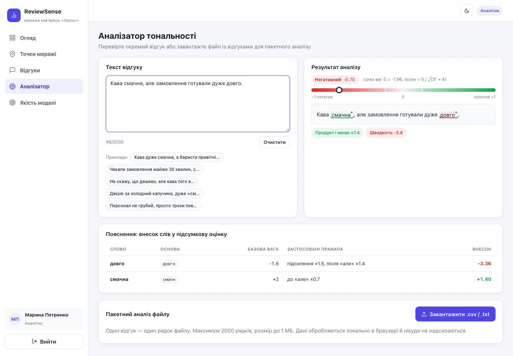
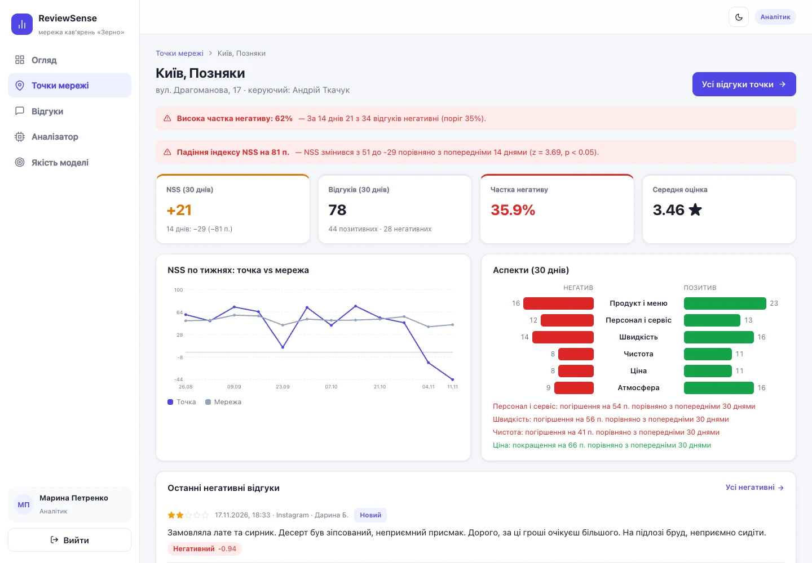
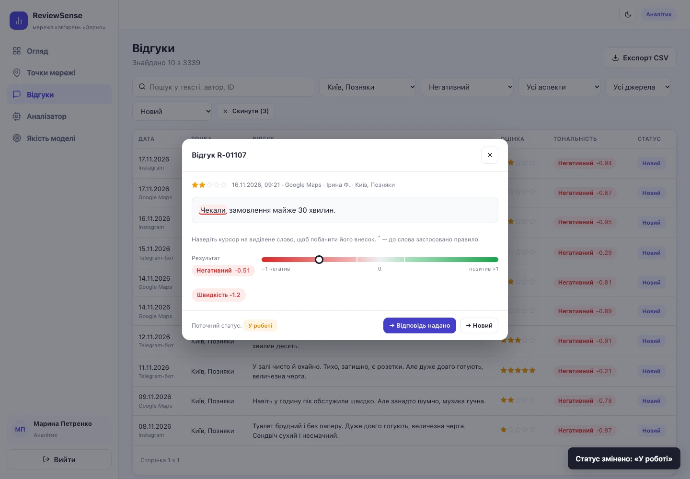

Сценарій захисту
До початку відкрий демо в сусідній вкладці. У блоці «Демо-облікові записи» вибери «Аналітик» і натисни «Увійти». У кожному кроці кнопка відкриває потрібний екран у тій самій вкладці демо.
≈ 4 хвилини
Проблема керуючого
Покажи. Залиш на екрані огляд мережі. Почни з питання.
«Уявіть, що ви керуєте мережею з дванадцяти кав’ярень. Одна з них має нормальну середню оцінку, але гості останнім часом частіше пишуть, що довго чекають на замовлення. Як дізнатися, де це відбувається і що перевірити сьогодні? Саме для цього я зробив ReviewSense. Зараз покажу шлях від фрази в одному відгуку до рішення керуючого».
Один відгук може містити і похвалу, і скаргу
Покажи. Відкрий «Аналізатор», встав приклад. Вкажи на аспекти «Продукт і меню» та «Швидкість», потім на внесок слів у таблиці під результатом.
Кава смачна, але замовлення готували дуже довго.
«Тут людина хвалить каву й скаржиться на очікування. ReviewSense виділяє дві окремі теми: продукт отримує позитивну оцінку, швидкість — негативну. Можна побачити, чому загальний висновок негативний: “дуже” підсилює “довго”, а частина після “але” має більшу вагу. Тобто керуючий одразу бачить, що варто перевірити час видачі замовлень».Відкрити аналізатор

Яку точку перевірити першою
Покажи. На «Огляді» знайди «Потребують уваги». Вкажи на частку негативу для Позняків і натисни «Деталі» у цьому сповіщенні.
«Один відгук підказує, що могло піти не так. На рівні мережі мені треба зрозуміти, чи це повторюється. Огляд підсвічує точки зі сповіщеннями. Тут я бачу Позняки й одразу знаю, з якої кав’ярні почати перевірку. Для мене як керуючого це і є перше рішення: куди спрямувати увагу».Відкрити огляд
Що саме перевірити на Позняках
Покажи. Порівняй лінії «Точка» й «Мережа» та вкажи на «Швидкість» і «Персонал і сервіс» у блоці аспектів. Прокрути до «Останні негативні відгуки».
«Тут я порівнюю динаміку Позняків з мережею. Далі дивлюся, про що саме пишуть гості. У демонстраційних даних є негатив про швидкість та обслуговування. Я відкриваю самі відгуки й перевіряю, що люди описують. Це дає мені гіпотезу для роботи з точкою: перевірити час від прийняття замовлення до видачі й обговорити результати з командою».Відкрити Позняки

Відкрити скаргу й узяти її в роботу
Покажи. Натисни «Усі негативні». Обери статус «Новий» і відкрий «Чекали замовлення майже 30 хвилин» або інший відгук про очікування. Натисни «У роботі» та покажи новий статус у діалозі.
«Я бачу оригінальний текст скарги й можу перевірити, як система її оцінила. Переводжу відгук у статус “У роботі”. Тепер видно, що звернення вже взяли на опрацювання. У реальній роботі після перевірки й змін я повернувся б до огляду та подивився, чи стало менше скарг на швидкість у наступному періоді».Відкрити нові скарги

Що є результатом перебування в нашій системі?
Покажи. Залиш відкритим відгук про очікування й вкажи на статус «У роботі». Назви точку та наступний крок керуючого.
«Після роботи в ReviewSense керуючий знає, яку точку перевірити, що саме перевіряти, і має конкретне звернення, взяте в роботу. У нашому прикладі це Позняки, довге очікування замовлень і відгук зі збереженим статусом “У роботі”. Наступний крок керуючого — перевірити час видачі замовлень у цій кав’ярні. Ось результат, який я показав на демонстраційних даних».
Якщо запитають після показу
Що користувач отримує на виході?
Керуючий отримує огляд проблемної точки, бачить, про що скаржаться гості, й може відкрити відгуки, на яких ґрунтується висновок. У показі він обирає скаргу з Позняків і переводить її у статус «У роботі». Цей статус зберігається в браузері і його видно під час наступного перегляду.
Якби ми перевіряли користь на реальних даних, я б виміряв час від появи серії схожих скарг до моменту, коли керуючий помітив проблему й узяв перше звернення в роботу.
Що ReviewSense додає до середньої оцінки в зірках?
Зірки показують загальне враження. ReviewSense показує, про що саме пишуть гості, де ця тема повторюється і як змінюється частка негативних відгуків. Керуючий може відкрити першоджерело й вирішити, що перевірити.
Що означає NSS і як виникає сповіщення?
NSS — різниця між кількістю позитивних і негативних відгуків, поділена на загальну кількість і помножена на 100. Сповіщення про високу частку негативу залежить від заданого порога й обсягу відгуків. Для сповіщення про падіння NSS система також перевіряє, чи істотно виросла частка негативу в порівнянні двох 14-денних періодів.
Як перевірено аналіз українського тексту?
На екрані «Якість моделі» я порівнюю прогноз із заздалегідь заданою міткою синтетичного відгуку. Матриця показує, які класи плутаються, а окремі конфігурації дають порівняти внесок правил. Для висновку про точність на реальних відгуках потрібна незалежна розмічена вибірка.
Звідки беруться відгуки в демонстрації?
Дашборд будується з синтетичного набору для 12 точок. Назви каналів — частина демонстраційних даних. В аналізатор можна вставити реальний текст або відкрити локальний CSV чи TXT, де кожен відгук записано окремим рядком.
Як відповісти на зауваження до звіту?
«Дякую, я уточню оформлення. Скажіть, будь ласка, який саме розділ потребує доопрацювання?» Якщо просять пояснити результат роботи, покажи пару «сигнал на дашборді → відгук у роботі» й коротко скажи, для якого рішення керуючого це потрібно.